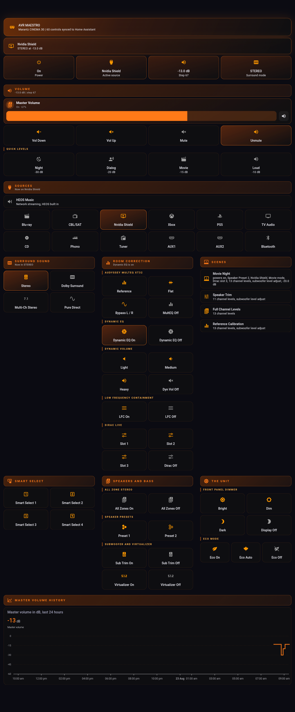
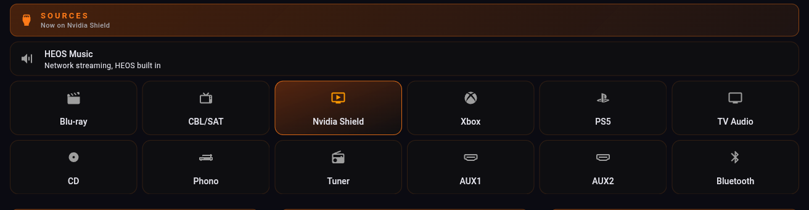
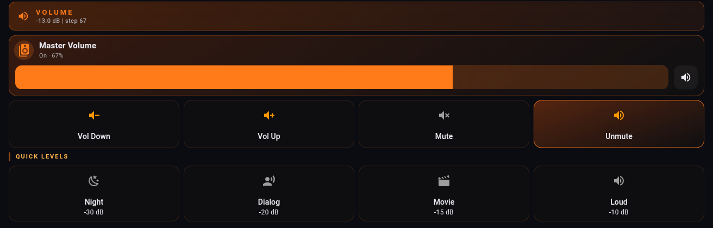
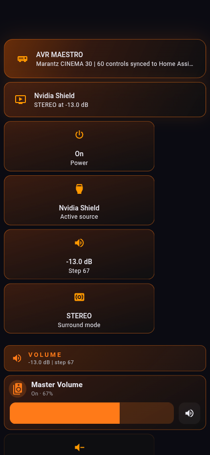

Once AVR Maestro has synced, Home Assistant has a control for everything your receiver can be told to do, and no opinion at all about how to arrange them. This is one arrangement, built on a Marantz CINEMA 30 that published sixty, with the YAML for every piece of it. Take the whole thing or take one card.

Two things feed this dashboard, and knowing which is which explains everything else about it.
Put them together and a button can both send a command and show whether that command is the one currently running. That is the whole trick, and it is in the highlighting pattern below.
Do the Home Assistant setup first so your scenes and controls exist. Then, if you want it to look like the screenshots, four cards from HACS:
| Card | Used for | Without it |
|---|---|---|
| Mushroom | Every control tile and the volume slider | Use a plain button card. It works, it is squarer. |
| button-card | The section headers with a live label | Use a markdown card, or plain headings. |
| card-mod | The colour, the glow, the highlight state | Everything still works. Nothing lights up. |
| apexcharts-card | The volume history graph | Use the built-in history-graph card. |
Every example here uses two placeholders. Replace them once and the rest copies straight in.
| Placeholder | What it is | Where to find it |
|---|---|---|
media_player.your_receiver | The receiver entity from the Denon AVR integration | Settings › Devices & Services › your receiver › the media player entity |
script.avr_maestro_MAC_... | An AVR Maestro control | Developer Tools › States, filter on avr_maestro |
The middle of every script ID is your receiver's MAC address, twelve lowercase characters. That is deliberate: naming a script after the scene and the receiver meant renaming either one left the old script behind and quietly made a second. Named after the MAC, a rename updates the same script.
The simplest thing on the board. Tap it, the script runs, the receiver does the thing. No custom cards needed at all.
type: button
name: Pure Direct
icon: mdi:speaker
tap_action:
action: perform-action
perform_action: script.turn_on
target:
entity_id: script.avr_maestro_MAC_mode_pure_direct
Stock Home Assistant. Works out of the box.
That is genuinely all a control is. Everything below is this, dressed.
This is the one worth stealing. The button sends a script, and colours itself from the receiver entity's state, so the input you are actually on is lit and the other twelve are not.

type: custom:mushroom-template-card
entity: script.avr_maestro_MAC_input_cd
icon: mdi:disc
primary: CD
icon_color: >-
{{ 'orange' if (state_attr('media_player.your_receiver','source') or '')|lower
== 'cd' else 'grey' }}
layout: vertical
fill_container: true
tap_action:
action: perform-action
perform_action: script.turn_on
target:
entity_id: script.avr_maestro_MAC_input_cd
card_mod:
style: |
ha-card {
border-radius: 14px;
{% if (state_attr('media_player.your_receiver','source') or '')|lower == 'cd' %}
background: linear-gradient(160deg, rgba(226,86,10,0.34), rgba(15,15,17,0.88));
border: 1px solid rgba(255,122,24,0.80);
{% else %}
background: rgba(15,15,17,0.72);
border: 1px solid rgba(255,122,24,0.14);
{% endif %}
}
Mushroom for the tile, card-mod for the lit state.
The same shape does surround modes, with sound_mode in place of source. Two notes from building it on a real receiver:
source_list and sound_mode_list attributes. Those are your receiver's own strings.Xbox while the AVR Maestro control is still input_game1. Match on what the receiver reports, not on what the script is called.A section title is dead space. Give it the live value underneath and it earns its row: "Sources" becomes "Sources / Now on Nvidia Shield".
type: custom:button-card
name: Sources
icon: mdi:video-input-hdmi
color_type: label-card
entity: media_player.your_receiver
show_label: true
label: >-
[[[ var v = states["media_player.your_receiver"].attributes.source;
return v ? ("Now on " + v) : "Receiver in standby"; ]]]
tap_action:
action: none
styles:
grid:
- grid-template-areas: '"i n" "i l"'
- grid-template-columns: min-content auto
name:
- font-size: 13px
- letter-spacing: 3px
- text-transform: uppercase
- justify-self: start
label:
- font-size: 11px
- justify-self: start
button-card. The two-line grid is what puts the label under the title rather than beside it.
Home Assistant reports volume as a fraction. Nobody sets a receiver to "0.67". The conversion is one line, and once you have it the whole volume section reads like a receiver instead of a slider.

volume_level as master volume divided by 100. On Denon and Marantz receivers MV 80 is the 0 dB reference. So dB = volume_level × 100 − 80. A volume_level of 0.67 is master volume 67, which is −13.0 dB.type: custom:mushroom-template-card
entity: media_player.your_receiver
icon: mdi:volume-high
primary: >-
{% set v = state_attr('media_player.your_receiver','volume_level') %}
{% if v is not none %}{{ (v * 100 - 80) | round(1) }} dB{% else %}Standby{% endif %}
secondary: Master volume
layout: vertical
The readout.
And a preset is a button that sets a level directly, rather than stepping there:
type: custom:mushroom-template-card
entity: media_player.your_receiver
icon: mdi:weather-night
primary: Night
secondary: "-30 dB"
tap_action:
action: perform-action
perform_action: media_player.volume_set
target:
entity_id: media_player.your_receiver
data:
volume_level: 0.50
0.50 is master volume 50, which is -30 dB.
Scenes are the reason most people link the two in the first place. Read the name from the script rather than typing it, and renaming a scene in AVR Maestro renames the tile with no dashboard edit.
The second line is worth the extra minute. A wall of scene buttons all called something evocative tells you nothing at 11pm; a line under each one saying what it actually restores tells you which to press.

type: custom:mushroom-template-card
entity: script.avr_maestro_MAC_scene_1234567890123
icon: mdi:theater
primary: >-
{{ state_attr('script.avr_maestro_MAC_scene_1234567890123','friendly_name')
| replace('AVR Maestro - ', '') | replace(' (Your Receiver)', '') }}
secondary: >-
{% set t = states.script['avr_maestro_MAC_scene_1234567890123'].attributes.last_triggered %}
{{ 'recalled ' ~ relative_time(t) ~ ' ago' if t else 'not run yet' }}
tap_action:
action: perform-action
perform_action: script.turn_on
target:
entity_id: script.avr_maestro_MAC_scene_1234567890123
The two replace() calls trim the prefix and the receiver name off the friendly name.
A recorder history of your listening levels, which is more interesting than it sounds once you have a week of it. The transform line is the same dB conversion as above.
type: custom:apexcharts-card
graph_span: 7d
header:
show: true
title: Master volume, last 7 days
series:
- entity: media_player.your_receiver
attribute: volume_level
name: Master volume
type: area
curve: stepline
unit: dB
float_precision: 1
transform: "return x == null ? null : Number(x) * 100 - 80;"
extend_to: now
group_by:
duration: 1h
func: last
fill: last
apex_config:
chart:
height: 240
yaxis:
min: -60
max: 0
group_by with fill: last is what turns sparse events into a continuous line.
This is the part that will save you an hour, so it is worth being plain about.
A tile can only light up if Home Assistant can read the matching state. Home Assistant reads the receiver through its Denon AVR integration, and that integration publishes a specific list:
| Home Assistant can see | Home Assistant cannot see |
|---|---|
| Power | Audyssey MultEQ curve |
| Selected source | Dynamic Volume setting |
| Surround mode | Which Dirac slot is loaded |
| Volume and mute | Front panel dimmer level |
| Dynamic EQ, sometimes | Eco mode, speaker preset, virtualizer |
Everything in the right-hand column is readable from the receiver - it answers when asked. It simply is not published to Home Assistant, so a dashboard has nowhere to read it from. Those buttons still work perfectly; they just cannot show you which one is currently active.
true, false, or not at all. Treating "not at all" as "off" puts a confident wrong answer on your wall. The example dashboard lights On for true, Off for false, and neither when the attribute is missing - with the header reading "state not published" so you know the difference.icon_color: >-
{% set d = state_attr('media_player.your_receiver','dynamic_eq') %}
{{ 'orange' if d is true else 'grey' }}
secondary: >-
{% set d = state_attr('media_player.your_receiver','dynamic_eq') %}
{% if d is none %}state not published{% elif d %}on{% else %}off{% endif %}
Three states, not two.
The layout is a Home Assistant sections view with max_columns: 3. Sections reflow on their own, so the same dashboard is a three-column wall on a tablet and a single readable column on a phone with nothing extra to configure.

The grouping that worked, after a couple of tries, is by what you are doing rather than by what kind of control it is:
Room Correction is the tallest column on purpose. It is the one nobody else's dashboard has.
Home Automation is the one paid unlock in AVR Maestro. Everything else, including the on-device AI assistant, is included.